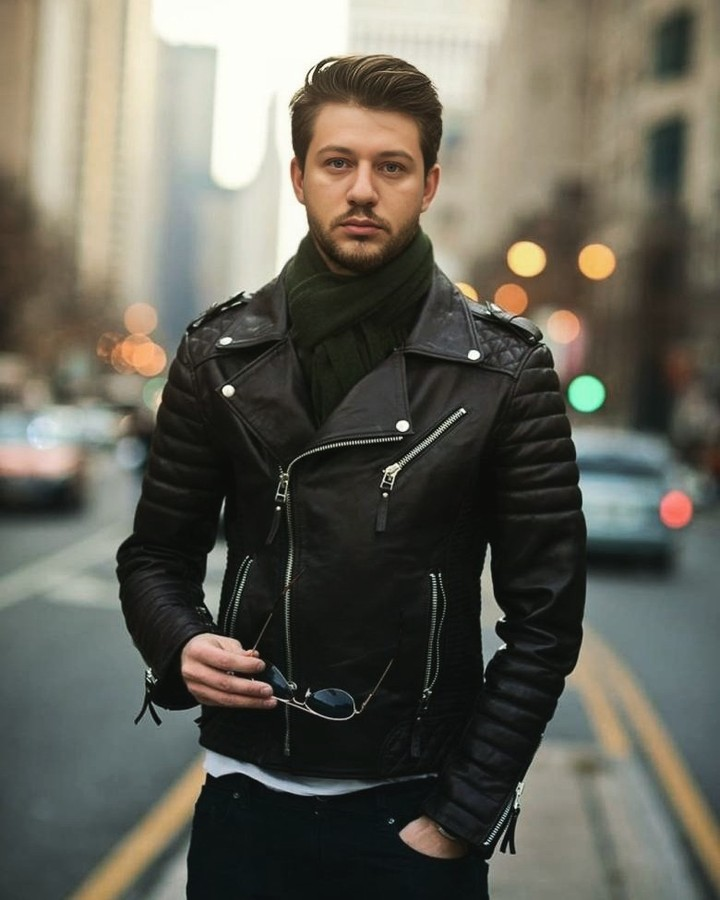

Сказочный персонаж
Мой сайт не для впечатления, а для декларации.
Социальные сети — удел тех, чью реакцию можно считать, взвесить и продать. Я вышел из игры и теперь декларирую здесь своё: творчество, дневник, взгляд на сериалы, возможно что-нибудь ещё или даже буду курьировать благотворительность через сайт. Сайт от имени одной персоны — и только от неё.

«Декларируй своё.»
Эссе, рассказы, рефлексия и фантасмагории.
Файлы, изображения, видео. Нажмите «Читать», «Слушать» или «Смотреть» для просмотра в окне, «Скачать ↓» — для сохранения.
Файлы лежат в папке img/. Замените заглушки на свои — и карточки начнут открываться.
Визуал есть. Размышляю над содержанием. Пока содержание случайное.
Позиция вместо звёзд.
Старею. Уже не горю. Просто экзальтирую...